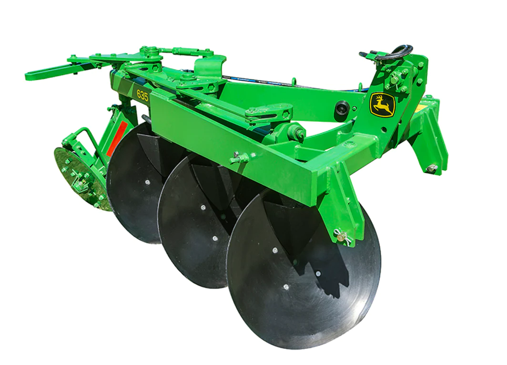

Maquinaria Agricola
Los implementos agrícolas son herramientas, maquinaria y equipos diseñados específicamente para facilitar y mejorar las labores relacionadas con la agricultura. Los cuales son utilizados en todas las etapas del proceso agrícola, desde la preparación del suelo hasta la cosecha.
Una compañia familiar
Esta microempresa de fabricacion de implementos agricolas da inicio gracias al trabajo y esfuerzo de Daniel del Valle Caballero culla experiancia en el area de la soldadura y aplicacion de la ingenieria, en el desarralo de toda la maquinaria agricola .
Que fabricamos:
Esta microempresa de fabricacion de implementos agricolas da inicio gracias al trabajo de Daniel del Valle Caballero NSX Type S fue una evolución del modelo con más potencia, mejores prestaciones deportivas y un diseño más agresivo. Destaca por un frontal más atrevido, exclusivos rines de 5 radios, neumáticos Pirelli P-Zero, un sistema de amortiguación adaptable reajustado, frenos carbono cerámicos, gráficos Type S y un techo de fibra de carbono estándar.
Costos
Esta microempresa de fabricacion de implementos agricolas da inicio gracias al trabajo de Daniel del Valle Caballero NSX Type S fue una evolución del modelo con más potencia, mejores prestaciones deportivas y un diseño más agresivo. Destaca por un frontal más atrevido, exclusivos rines de 5 radios, neumáticos Pirelli P-Zero, un sistema de amortiguación adaptable reajustado, frenos carbono cerámicos, gráficos Type S y un techo de fibra de carbono estándar.
Una compañia familiar
Esta microempresa de fabricacion de implementos agricolas da inicio gracias al trabajo de Daniel del Valle Caballero NSX Type S fue una evolución del modelo con más potencia, mejores prestaciones deportivas y un diseño más agresivo. Destaca por un frontal más atrevido, exclusivos rines de 5 radios, neumáticos Pirelli P-Zero, un sistema de amortiguación adaptable reajustado, frenos carbono cerámicos, gráficos Type S y un techo de fibra de carbono estándar.